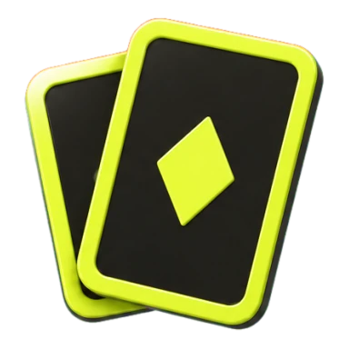

Markets
One index per trading-card license: Pokémon, One Piece, Yu-Gi-Oh! and sports cards. Long or short each one.
Simulated in your browser, in points
Open the trading demo
All markets
Demo values| Pinned | Index | Demo value, pts | 2h change | 2h high | 2h low | 2h range | Last tick | 2h curve | Composition | Funding | Trade |
|---|
No index matches this search.
What an index is

Many sales.Cards of the same license change hands again and again, each time at their own price.
One number.An index folds those sales into a single value that moves with them.

Two sides.Long if you think the number rises, short if you think it falls. You never hold the object.
Not announced yet
- Composition of each index
- Not announced yet
- Price source
- Not announced yet
- Funding
- Not announced yet
- Fees
- Not announced yet
- Leverage
- Not announced yet
- Open interest, volume
- n/a in demo
Pokémon, One Piece and Yu-Gi-Oh! are trademarks of their owners. Gachiz is an independent project and is not affiliated with them.